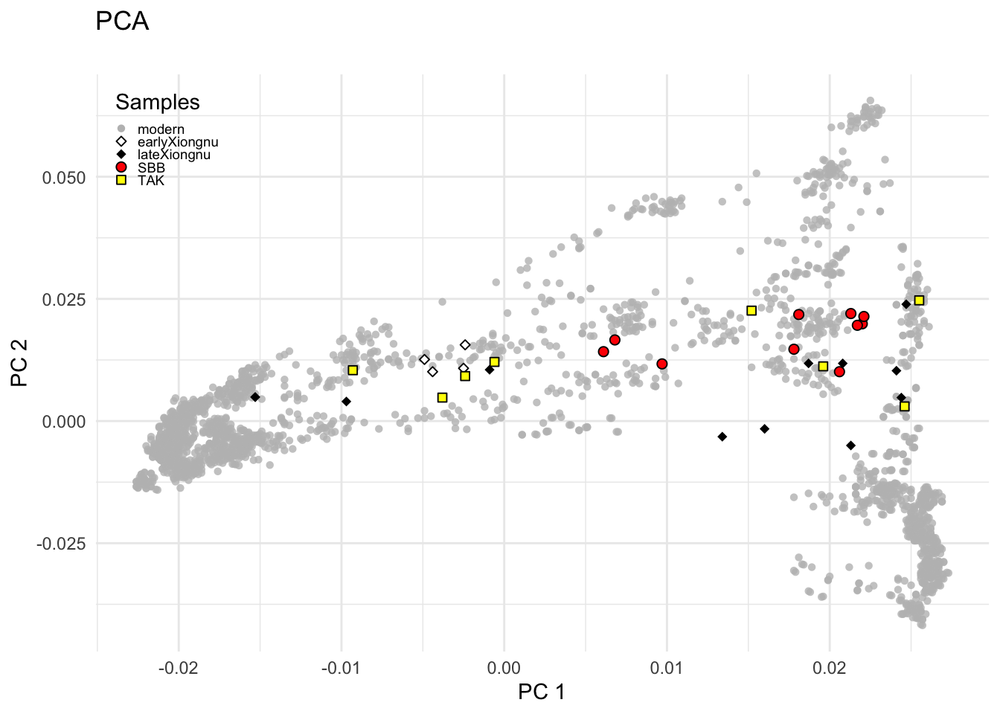

My goal/idea is Overlaying PCA results on a world map to show the correlation between genetic distances and geographical origins.
Creative-nontraditional-artistic output of the PCA <- How genetic world will look like?
Dataset is my own work from data replication project, which directly related to my field of study (population genetic analyses).
Usually the PCA represented the genetic distance of the population collected from different countries, and in representing the data on PCA, PC1 always represents the geographical gradient from west to east, while PC2 is north to south cline. However, its not visually presented how much the genetic PCA of population actually represent the geographically.
The smartpca function out generated .evec and .eval files. I use .evec file to visualize the genetic relationship.
I saved the all plot outputs in the output folder (because in quarto html they are not visually good, need to be enlarged - or better look shiny app)
I am trying to generate the PCA plot using my eigenvector data.
This is the PCA mostly presented in the papers [traditional version]
library(plotly)
Loading required package: ggplot2
Attaching package: 'plotly'
The following object is masked from 'package:ggplot2':
last_plot
The following object is masked from 'package:stats':
filter
The following object is masked from 'package:graphics':
layout
Warning: A numeric `legend.position` argument in `theme()` was deprecated in ggplot2
3.5.0.
ℹ Please use the `legend.position.inside` argument of `theme()` instead.

Further steps applied
Step 1: Here, I am trying to at first plot PCA according to their country color.
I changed the metadata of the populations manually, only adding country column. Also, for this project I removed ancient samples, I am focusing on visualization of the modern population genetics for now.
After designing according to the population dataset, I colored population points respective to their country to see the distribution of the country.
keep <-read.csv("/Users/madinaseidualy/Desktop/Data_Analyses/visualization/PCA_pop_marker_country_modern.csv")evecDat_plotting <-merge(evecDat, keep, by ="Pop")evecDat_plotting$Country <-as.factor(evecDat_plotting$Country)Country=evecDat_plotting$CountryevecDat_plotting <- evecDat_plotting |>arrange(Transparency) ### to arrange visibility#I uploaded new metadata - where ancient samples are removed, so setting variables againsamples <-as.character(evecDat_plotting$Group)transparency <- evecDat_plotting$Transparencyggplot(evecDat_plotting, aes(PC1, PC2)) +geom_point(aes(color = Country, shape = samples, fill = samples, size = samples), alpha = transparency) +labs(title ="PCA Colored by Country", x ="PC1", y ="PC2") +theme_minimal() +scale_size_manual(values = evecDat_plotting$Size) +theme(legend.position ="right",legend.text =element_text(size =7),legend.key.size =unit(0.3, "cm") )
Step 4: I have to scale the country maps to the size of the PCA cluster
In the function - warp_map_to_pca - I am giving as input my PCA country maps (extracted from world maps), each country, and my pca data (with population country information).
It takes the Latitude and longitude of the country map - transforms it to 0 to 1 dimension;
The same - getting polygon of the sample distribution area for country is done
Then scaling the actual country map to the polygon;
Step 5: Applying scaling function to all countries and saving output into separate dataframe
# Warp all countrieswarped_maps <-lapply(my_countries, function(cntry) {warp_map_to_pca(cntry, country_map_data, evecDat_plotting)})# Combine all into one data framewarped_df <-bind_rows(warped_maps)
Step 6: Plotting the world map warped to Genetic PCA map
ggplot() +geom_polygon(data = warped_df, aes(x = PCAx, y = PCAy, group = group, fill = Country), color ="black", alpha =0.7) +geom_point(data = evecDat_plotting, aes(x = PC1, y = PC2, color = Country), alpha =0.4, size =1, show.legend =FALSE) +theme_minimal() +labs(title ="Real Country Maps Warped to PCA Cluster Shapes", fill ="Country")+theme(legend.key.size =unit(0.2, "cm"),legend.text =element_text(size =7),legend.title =element_text(size =8))
Step 7: The country map center isn’t well aligned to the center of the actual PCA sample cluster, so
I wanted to center the map into highly clustered area. By first finding the center of the cluster by calcualting mean of the sampes’ PCA location;
detecting sample cluster position properly
detect_cluster_core <-function(df) { coords <- df[, c("PC1", "PC2")] center <-colMeans(coords) cov_mat <-cov(coords) dists <-mahalanobis(coords, center, cov_mat) threshold <-quantile(dists, 0.90) # keep 90% closest points df[dists <= threshold, ]}warp_map_to_pca <-function(country_name, map_df, pca_df) { country_map <- map_df |>filter(region == country_name)if (nrow(country_map) ==0) return(NULL)# Get all PCA samples for this country pca_points <- pca_df |>filter(Country == country_name)if (nrow(pca_points) <3) return(NULL)# 🧠 Detect core cluster (replace this with detect_cluster_dbscan or quantile version) core_cluster <-detect_cluster_core(pca_points)if (nrow(core_cluster) <3) return(NULL)# Bounding box of cluster core bbox_x <-range(core_cluster$PC1) bbox_y <-range(core_cluster$PC2)# Normalize country shape map_norm <-normalize_coords(country_map)# Scale map to PCA bounding box map_scaled <- map_norm |>mutate(PCAx = bbox_x[1] + (bbox_x[2] - bbox_x[1]) * norm_x,PCAy = bbox_y[1] + (bbox_y[2] - bbox_y[1]) * norm_y )# Get core cluster center center_x <-median(core_cluster$PC1) center_y <-median(core_cluster$PC2)# Shift map slightly to include the core cluster center bounds_x <-range(map_scaled$PCAx) bounds_y <-range(map_scaled$PCAy) map_shifted <- map_scaled |>mutate(PCAx = PCAx,PCAy = PCAy,Country = country_name,group = country_map$group )return(map_shifted)}
Then repeating Step 5 and Step6
# Warp all countries warped_maps <-lapply(my_countries, function(cntry) { warp_map_to_pca(cntry, country_map_data, evecDat_plotting) })#Combine all into one data framewarped_df <-bind_rows(warped_maps)ggplot() +geom_polygon(data = warped_df, aes(x = PCAx, y = PCAy, group = group, fill = Country), color ="black", alpha =0.7) +geom_point(data = evecDat_plotting, aes(x = PC1, y = PC2, color = Country), alpha =0.1, size =1, show.legend =FALSE) +theme_minimal() +labs(title ="Real Country Maps Warped to PCA Cluster Shapes", fill ="Country")+theme(legend.key.size =unit(0.2, "cm"),legend.text =element_text(size =7),legend.title =element_text(size =8))
Here, the plot to without the points, to just visualize the world! It came out so beautiful, there is clear barriers between populations, even though some countries close allocated, they did not interact (for example, china and Russia).
While some countries like Uzbekistan, Turkmenistan in real worlds is more in the south side of the Kazakhstan, while in genetic map they are allocated more to the west side of the Kazakhstan.
country_centroids <- warped_df |>group_by(Country) |>summarise(PCAx =mean(PCAx, na.rm =TRUE),PCAy =mean(PCAy, na.rm =TRUE) )ggplot() +geom_polygon(data = warped_df, aes(x = PCAx, y = PCAy, group = group, fill = Country), color ="black", alpha =0.7, show.legend =FALSE) +theme_minimal() +labs(title ="Real Country Maps Warped to PCA Cluster Shapes", fill ="Country")+geom_text(data = country_centroids,aes(x = PCAx, y = PCAy, label = Country),size =1.8, fontface ="bold", color ="white") +theme(legend.key.size =unit(0.2, "cm"),legend.text =element_text(size =7),legend.title =element_text(size =8),panel.grid.major =element_line(size =0.2),panel.grid.minor =element_line(size =0.1))
Warning: The `size` argument of `element_line()` is deprecated as of ggplot2 3.4.0.
ℹ Please use the `linewidth` argument instead.